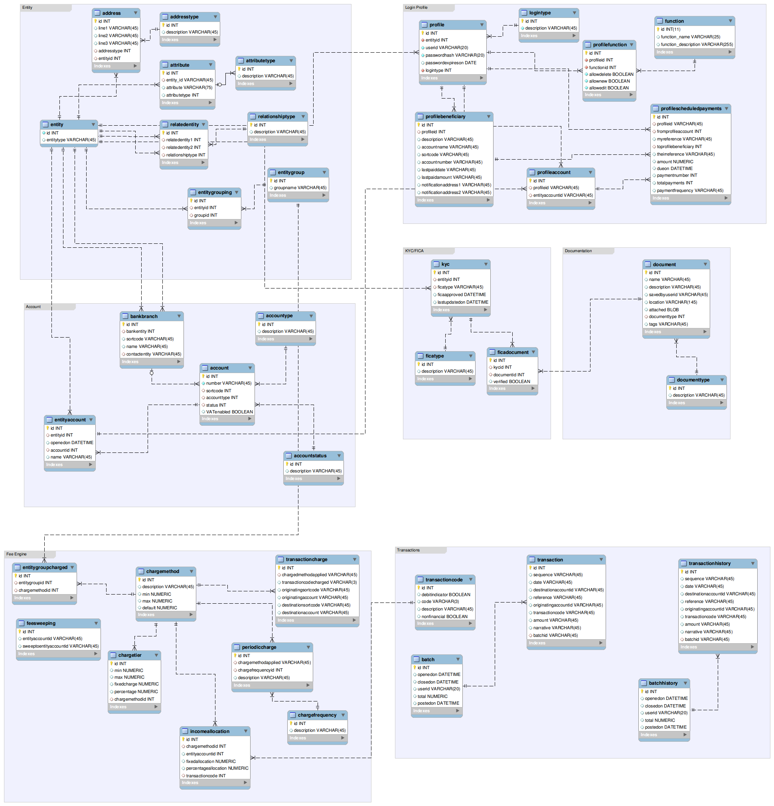

Database
cubanker utilises the LAMP (Linux,Apache,MySQL & PHP) server configuration and is deployable from a .deb or a PPA (Personal Package Archive) on Ubuntu 9.04 or later. The MySQL database script that installs the database and preconfigured data is called cubanker-x.y.sql where x.y refers to the release version of the package.
The schema is called cx and contains tables, foreign key references and stored procedures as well as pre-configured data to ensure no additional configuration of data is required in order to start using the package. A new user is added to the system called cxuser (no home directory is created for this user) and this is the user to whom mysql rights .etc are granted and which the application uses to access the database.
CAUTION: re-running the default script will destroy your database and replace it with the installation default. Therefore always develop on a seperate machine to your production machine, just to be sure.
The database ER (entity-relationship) diagram is provided below to aid in understanding the underlying data structures. The following observations may be helpful to developers:
Database Coding Conventions
Naming conventions are simply all-lowercase-concantenated eg. Profile Account would simply be profileaccount. The same applies to table names and field names. Stored procedures are prefixed with sp_. eg. sp_getprofileaccounts would return the user's accounts based on their profile.id.
All tables have an id auto increment INT primary field as their first column. This ensures that data inetegrity can be maintained when data maintenance is required. Other columns are indexed in line with the need for performance and usage of foreign keys.
Database Structure
The database is logically devided into several areas; Entity, Login Profile, Account, Fee Engine, KYC/FICA, Documentation, Transactions are the key areas.
Entity
The concept of an entity is fundamental to the data architecture in cubanker. This because an entity is any person, legal entity, company, or individual that the Community Bank deals with, even if they never actually open an account. So for example an entity could be a family trust, the trustees too will be entites in the system as well as the benficiaries, who may have accounts with the Community Bank. This approach ensures that a great deal of flexibility exists when deploying cubanker. If for example a special type of company exists, such as the Close Corporation in South Africa, this requires no additional coding. An entity type "Close Corporation" is added and the relevant entity attributes such as CC Registration Number are just as easily added in data and not in code. The central idea behind creating a logical entity is that although each entity may be entitled to open an account (or not - depending on the Community Bank's common bond constraints) each entity type has completely different attributes, different KYC and other requirements
Entities exist in relationship to one another and this often has legal bearing rather than any bearing on accounts in the system. For example, a private company is an entity, with attributes such as: registered company name, trading name, registration number, VAT/GST number etc. And let's say that the company qualifies for an account with the Community Bank.
The directors of the company are also entities, and their attributes would include: name, identity number, etc. as these are KYC/FICA requirements. One of these directors has an account with the Community Bank, the others don't. A relationship is created: director-of between these directors and the company.
Similarly any relationship between entities can be maintained, as is required by the Community Bank. Another example, may be the need to keep the relationship between employer and employee, then the employee may be an entity by virtue of their being clients but the employer is added as an entity so that this meaningful relationship may be maintained in the system.
In addition to attributes and relationships, entities may possess addresses and belong to entity groupings. Addresses are indeed any form of address, viz. an IP address or a Mobile Number or Postal Address are all possible types of address. All address types are configurable and this makes most sense as different types of entities possess different types of addresses. When an address is considered for an account holding individual, physical address may be relevant and nescessary because of KYC/FICA requirements, but the individual's employer, also an entity in the system, may not be an account holder and therefore is under no compulsion to provide physical address details but is willing to provide email or facebook address details in order to be kept appraised of what teyh Community Bank is doing for employees.
Entity groupings are a key element in the database structure relating to entities that needs describing. Entity groupings allows many-to-many flexibility in ensuring entities may be grouped together for any number of reasons (inclduing reporting). Essentially this is a future proofing aspect of the data architecture. In the current design, default fee charging is done on entity groupings, and so a default group is required if fees are going to be charged to any entity.
Lastly, even other banks with whom the Community Bank does business are recorded as entities within the system. This means that when configuring their branches (since the system needs to understand all branch sortcodes etc) these branches are known to belong to these bank entities. The danger is to take this concept of entities, entityattribute & entityattributetype too far and to turn every possible table column into a data row instead!. This approach is only followed for entity in order to achieve a single, consistent view of all entities interacting with the Community Bank.
{kind=link}